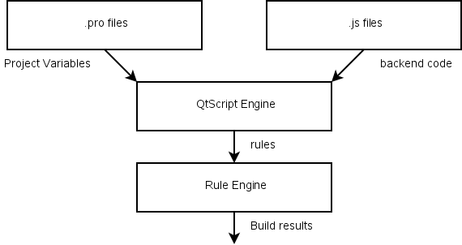

|
Qt Extended Home · Build System Home · Reference · User Guide · Internals | |
QBuild is a build tool. It does the job of reading qbuild.pro files and building the app, lib or plugin as directed. Compared to previous versions of Qt Extended, QBuild does the work of qtopiamake, qmake and make.
QBuild itself is quite simple. It parses qbuild.pro files similarly to qmake to determine the project variables. It runs backend code from .js files (via QtScript). The backend code will then create rules which are similar to the rules that would be written in a Makefile. QBuild executes these rules, taking advantage of multiple CPU cores if available.

The build system does not concern itself with the project parser or rule engine. However, the .js files that provide the backend code are considered part of the build system.
QBuild is not a drop-in replacement for qmake, hence projects must be ported to use it. This is not a complex process but it is not trivial either so there is no automated process to port projects for you. The complete set of porting information is in Porting to QBuild.
See also Basics.
| Copyright © 2009 Trolltech | Qt Extended - Build System Documentation |